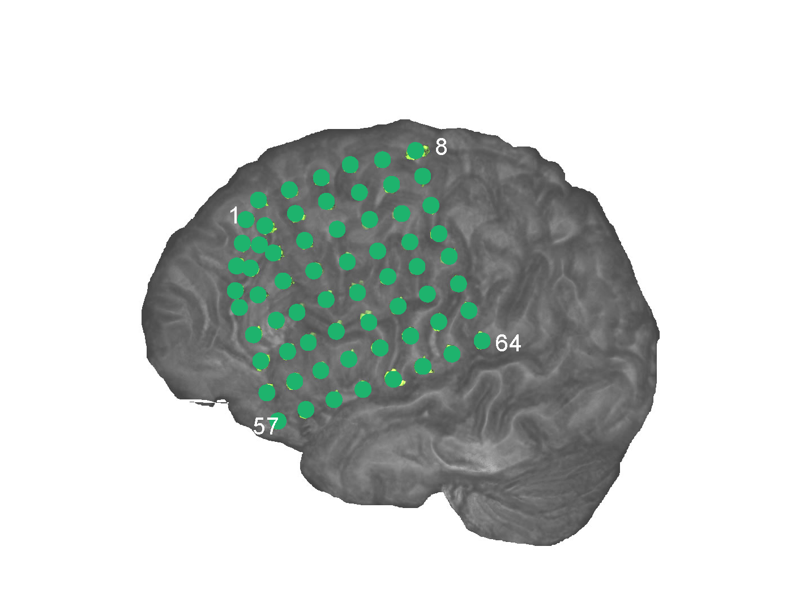

Research
|
My research interests lie mainly in the multidisciplinary fields of human brain mapping and computational neuroscience. Specifically, my research is focused on developing efficient and robust statistical methods for analyzing brain data and using these methods to investigate normal and abnormal functional organizations of the brain. The new methods that I have developed are in three major statistical fields: Bayesian inference, network analysis, and high-dimensional data. Due to recent advances in technology, enormous quantities of brain data in various modalities have been produced in many fields, including biology, neurology, neuroscience, psychology, and psychiatry. However, brain data, one of the most commonly cited forms of big data, raise new challenges to data analysts, due to their unique properties that are different from conventional data. To address these challenges, I have led several projects in close collaboration with scientists outside statistics to develop new statistical models and computational algorithms for analyzing brain data. (1) Brain Network Studies of Epileptic Seizures Using Intracranial EEG Data.The overall goals of my research are to develop new statistical modeling methods for analyzing high-dimensional brain data and use the methods to understand high-dimensional directed networks in human brains. Specifically, my research team develops high-dimensional directed network methods for analyzing intracranial EEG (iEEG) data. The iEEG data record 50-150 sites of intracranial brain electrical activity of patients with epilepsy by using cortical or depth electrodes. We analyze these iEEG data to study directed brain networks because in epilepsy, the propagation of seizures from a seizure onset zone (SOZ) to other healthy brain regions is a clinically important example of pathological directed brain networks. We obtained several significant results regarding brain network changes of patients with epilepsy. (1) The directed brain networks of patients with epilepsy have little variation across time before seizure onset, while they exhibit dramatic changes at seizure onset time. The changes in the brain networks occur mainly around the SOZ. We found that, after seizure onset, the numbers of directed connections of the SOZ and regions in the SOZ cluster increase significantly. (2) We revealed different patterns of brain network changes during seizure development for different epilepsy types. (3) The SOZ has the highest increase in directed connectivity at the seizure onset time. (4) By utilizing this special connectivity property of the SOZ, we have developed quantitative methods to localize the SOZ with high accuracy. The following two videos illustrate different patterns of brain network changes during seizure development for different epilepsy types.

Directed brain network changes of one patient during seizure development. Left: The intracranial EEG electrode placement on the left hemisphere of the patient. Right: The
identified directional brain networks from 300 seconds before (B) to 225 seconds after (A) seizure onset. The diamond at electrode G37 is the SOZ identified by expert interpretation of
EEG data. Nodes in light blue are the regions that did not belong to any clusters. Nodes in the same other colors (either dark blue, green, pink, red, purple, brown or yellow)
denote different identified clusters of regions. All nodes in red color belong to the SOZ cluster. Grey arrows indicate the identified directional connections between regions.
Anterioinferior electrodes preceded by an “X" were resected in a previous epilepsy surgery.
Directed brain network changes of the second patient during seizure development. Left: A segment of intracranial EEG recordings of the patient after seizure onset. Right: The identified directional brain networks from 300 seconds before (B) to 225 seconds after (A) seizure onset. The diamonds are the SOZ identified by expert interpretation of EEG data. Nodes in light blue are the regions that did not belong to any clusters. Nodes in the same other colors (either dark blue, green, pink, red, purple, brown or yellow) denote different identified clusters of regions. All nodes in red color belong to the SOZ cluster. Grey arrows indicate the identified directional connections between regions. Anterioinferior electrodes preceded by an “X" were resected in a previous epilepsy surgery. (2) Whole-Brain Network Analysis of Massive Neuroimaging Data.The functional organization of the brain is governed by two principles: functional specialization and functional integration. The former indicates that different brain areas are specialized for different brain functions, while the latter suggests different brain areas interact with each other to process information and perform various functions. The modular organization of the brain (also called modularity) of networks is tied with functional specialization and integration. Specifically, the brain network comprises modules of brain regions, whose connections with regions in the same module are stronger and denser than connections with regions in different modules. Brain regions in the same module tend to be specialized for the same or similar functions. Directed connections within and between modules ensure integration among different functionally specialized brain areas. We developed a new variational Bayesian method to identify functionally specialized modules and directed connections between and within modules while addressing computational challenges in analyzing massive fMRI data. We obtained several results from the directed network analysis of fMRI data. First, the modules identified by our method are accordant with functional brain systems specialized for various functions. Second, we revealed that large functional systems consist of several functional subdivisions (i.e., small modules) with different densities of directed connections. Moreover, the identified small modules overlap with anatomical subdivisions of these functional systems. Third, the most considerable variation in directed brain networks across subjects lies in between-module directed connections.
(3) Spatial-Temporal Analysis of Multi-Subject Neuroimaging Data for Human Emotion Studies.
|